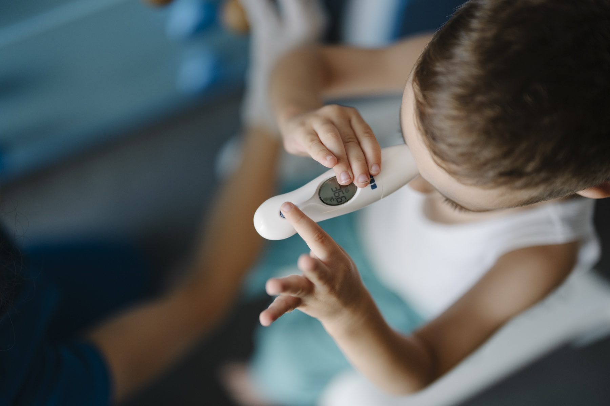

Depois de uma crise febril, a chance de se tornar epiléptica no futuro é só um pouquinho maior que a da população geral — quase irrisória. O número ancora a benignidade antes da história natural.
O cenário típico
Criança com infecção de via aérea superior (IVAS). Estatisticamente, um grande motivo é a infecção viral. O mecanismo fino pelo qual o vírus se destaca como gatilho não está plenamente esclarecido — o fato clínico permanece: vírus é grande causador.
Com temperatura axilar muito elevada, o risco sobe: quanto mais elevada a temperatura, maior o risco. A crise surge geralmente no primeiro dia de febre.
Poucas vezes na vida
A crise febril não gosta de voltar: o padrão é 1 ou 2 crises na vida. Não é doença que "acompanha a infância inteira" como rotina.
Benignidade e a pergunta da família
Pergunta clássica de família e de prova: qual a chance de se tornar epiléptica no futuro? A chance é apenas um pouquinho maior do que a da população geral — quase irrisória. Esse "pouquinho a mais" situa-se, na ordem de grandeza da fonte, abaixo de 1% de incremento relativo em relação à população geral.
No núcleo do ensino: crise febril é doença benigna. O trabalho clínico e de prova gira em torno de reconhecer a benignidade sem deixar de triar o que foge do padrão.
População geral
linha de base
risco de epilepsia da criança comum, sem crise febril prévia.
Pós-crise febril
+ <1%
acréscimo relativo na ordem da fonte — quase irrisório.
✓ Benigna
quanto maior T, maior riscoIVAS viralcrise no D11–2× na vida
⚠ Caixa-nuança · divergência de fonte
O canon da fonte ensina incremento <1% e benignidade. Na literatura refletida no BR, o risco absoluto de epilepsia após CF simples costuma ser citado em torno de ~1–2,5%; o risco sobe com complexa, história familiar de epilepsia e atraso de desenvolvimento. Mantém-se o canon didático da fonte (benignidade + ordem <1%); a nuance absoluta fica visível para prova/precisão.
laudo [021] / [102] · DIVERGÊNCIA

Termometria digital em criança febril — observação no serviço. Child checks temperature with digital thermometer from above · via Wikimedia Commons · CC BY 2.0 · Fonte: commons.wikimedia.org/wiki/File:Child_checks_temperature_with_digital_thermometer_from_above.jpg · Âncora da história natural (IVAS + febre no D1).
📌 Resumo operacional
IVAS viral · D1 · T↑↑ · 1–2× na vida · benigna · risco futuro ~pop. (+ irrisório).
🧩 Revisão ativa · metacognição
Por que "vírus" importa mesmo sem mecanismo molecular fechado?
O que você diz aos pais sobre recorrência e epilepsia futura?
Onde a benignidade não autoriza relaxar a triagem?
🧠 Quiz
Q1. Sobre a história natural da crise febril, assinale a correta:
Q2. Após crise febril típica, o risco de epilepsia futura: